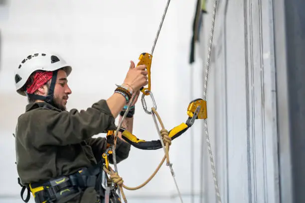

Urgence Cordiste 62
Intervention Cordiste Pas-de-Calais (62)
Service d'urgence cordiste dans le Pas-de-Calais

Pourquoi solliciter un cordiste en urgence ?
Une intervention urgente en hauteur demande des compétences précises et un équipement de sécurité adapté. Grâce aux techniques d’accès sur corde, nos équipes se déplacent rapidement et efficacement là où les nacelles ou échafaudages ne peuvent être déployés. Notre entreprise spécialisée en travaux acrobatiques prend en charge les situations délicates : mise en sécurité de façades, dépannage en hauteur, sécurisation d’éléments instables ou opérations techniques particulières.
Sur quels bâtiments intervenons-nous ?
Nos cordistes professionnels opèrent sur tous types d’ouvrages : résidences, hôtels, immeubles tertiaires, centres commerciaux, sites industriels ou bâtiments administratifs. Que ce soit pour une intervention d’urgence ou un dépannage ponctuel en hauteur, nous garantissons rapidité, sécurité et efficacité.
Quel budget prévoir pour une urgence cordiste ?
Le tarif d’une intervention cordiste urgente dépend de la nature du problème, de l’accessibilité, du degré d’urgence et du type de bâtiment. Pour obtenir une estimation rapide dans le Pas-de-Calais (62), joignez-nous au 07 60 52 57 92 ou faites votre demande de devis gratuit et personnalisé .
CONTACTEZ - NOUS
VOS INTERROGATIONS LES PLUS COURANTES
Nous prenons en charge toutes les urgences en hauteur : bachage apres tempete ou sinistre, mise en securite de facades dangereuses, purge d'elements instables, pose de filets de protection, decrochage d'objets a risque.
Notre service d'urgence reste accessible 7j/7. Selon la gravite du sinistre et notre planning, nous pouvons nous deplacer dans les heures qui suivent votre appel. Pour les situations critiques, nos equipes sont mobilisees en priorite.
Oui, notre equipe d'astreinte intervient en dehors des horaires de bureau pour les situations urgentes. Une majoration peut s'appliquer pour les passages de nuit ou le week-end.
Pour toute urgence cordiste dans le Pas-de-Calais, joignez-nous directement au 03 20 84 34 65. Decrivez la situation et nos equipes evalueront le degre d'urgence pour securiser rapidement votre batiment.
Dans la majorite des cas, les interventions d'urgence consecutives a un sinistre (tempete, degat des eaux, incendie) sont prises en charge par votre assurance habitation. Nous vous remettons les justificatifs necessaires pour votre dossier.